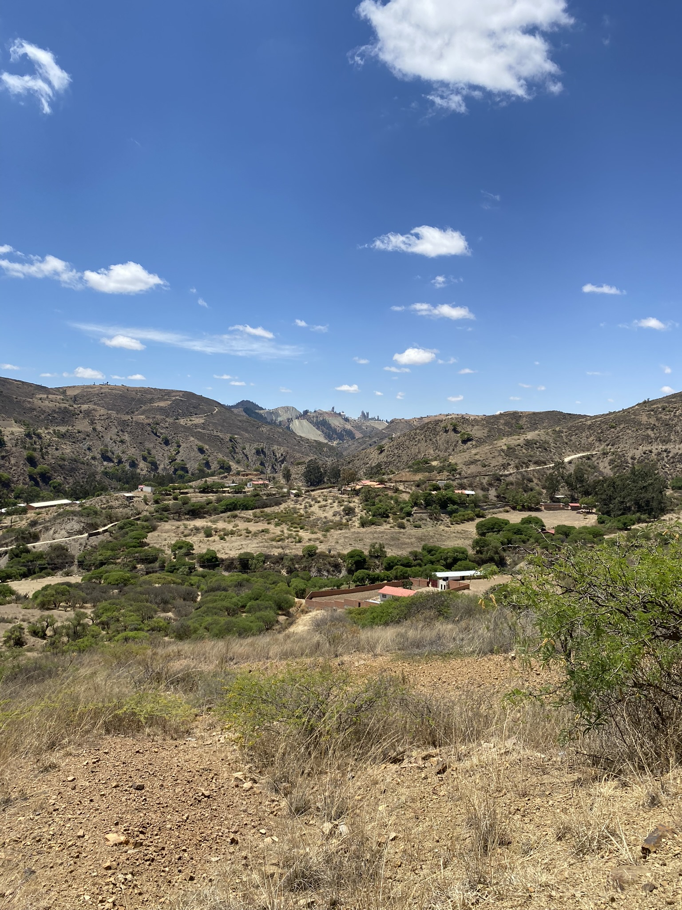
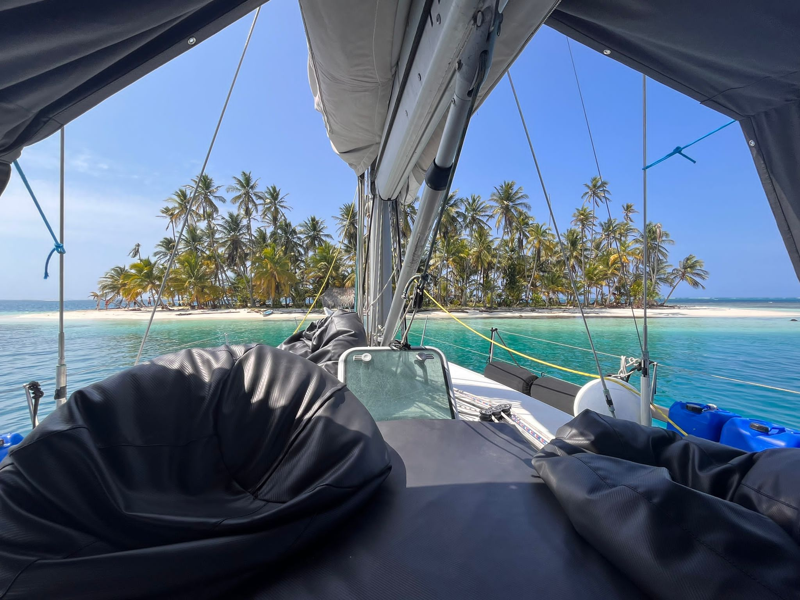
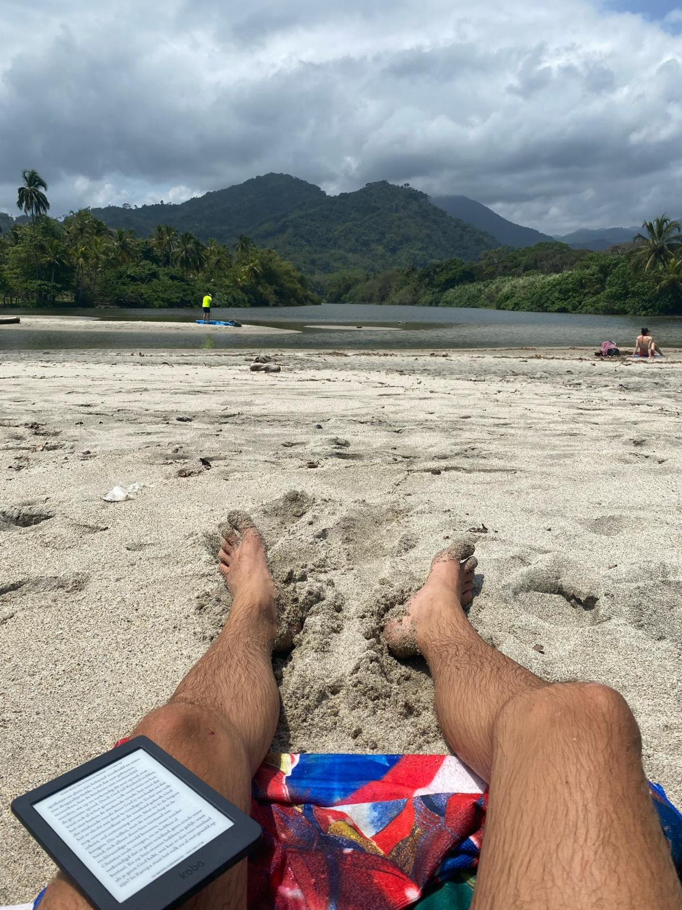
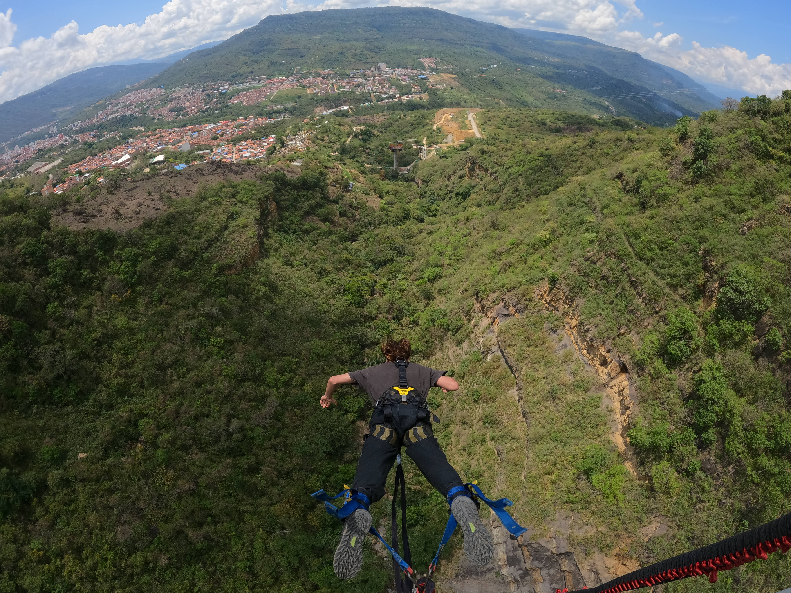
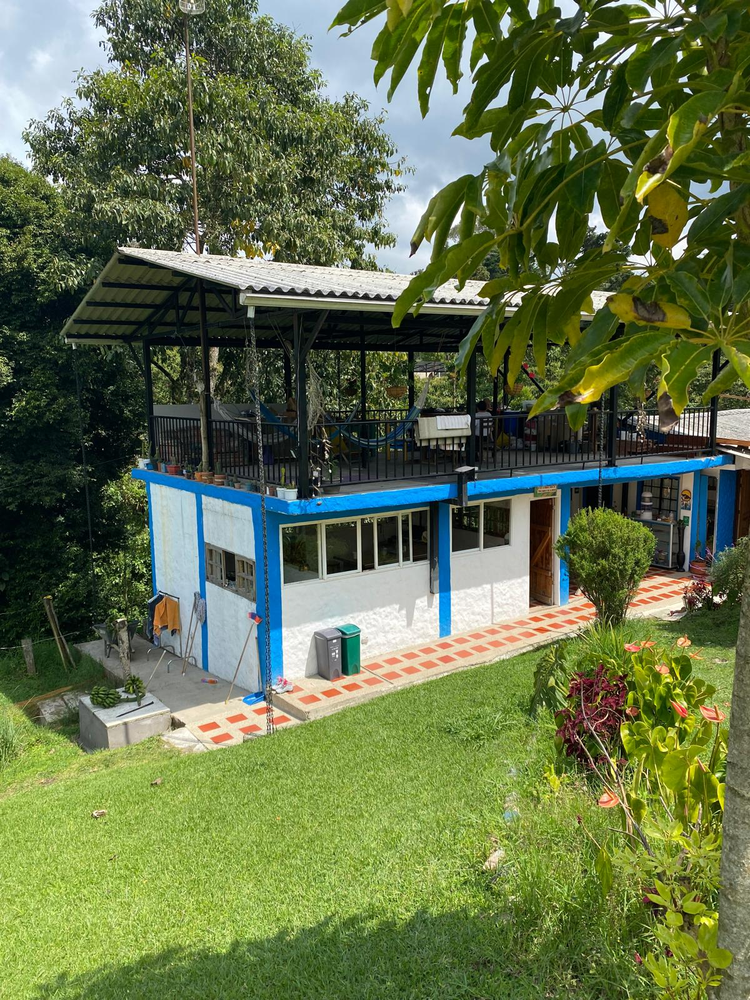
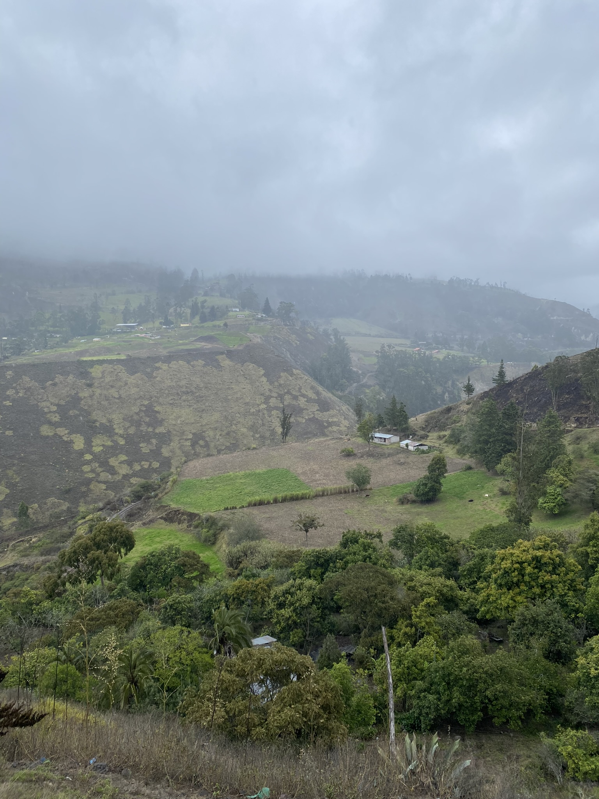
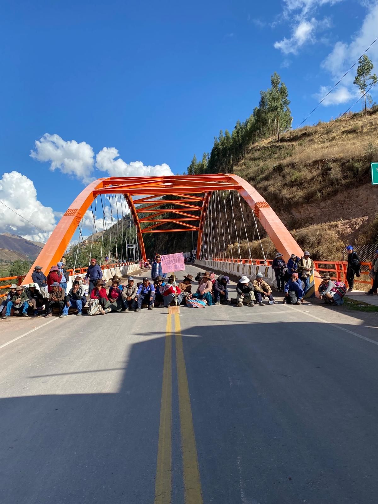
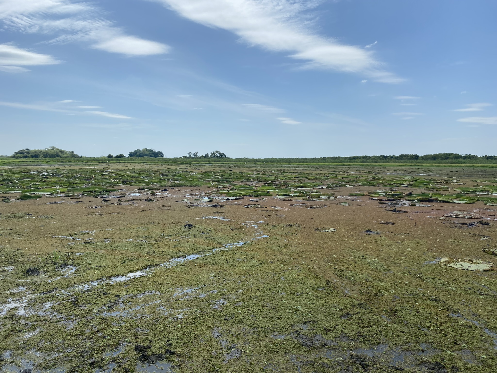
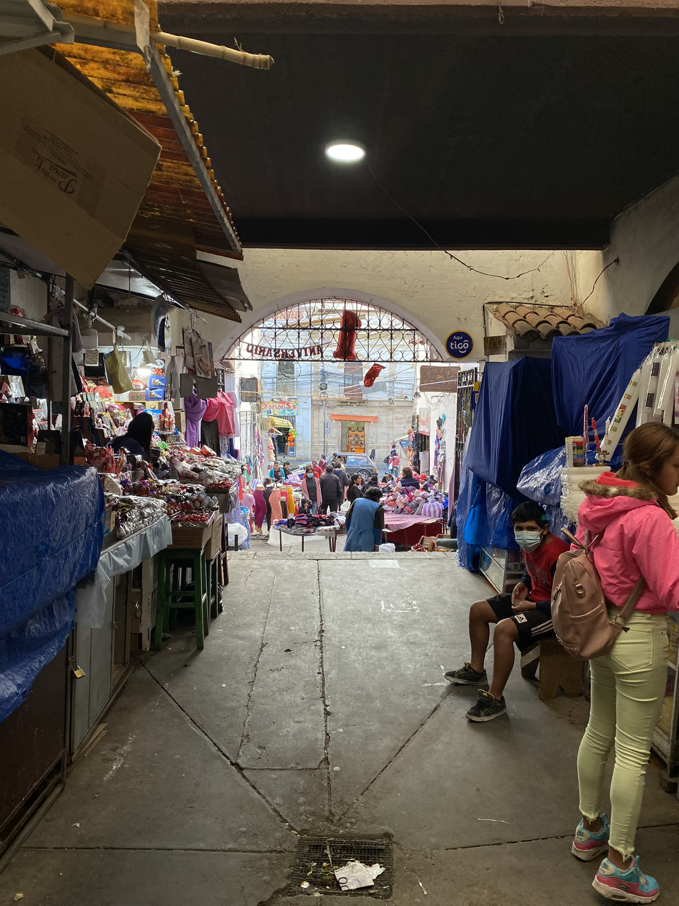

Verdwijnen
De lucht kleurt blauw in het glooiende berglandschap. Onbekende roofvogels zweven geluidloos in de wolkeloze massa, loerend naar de muisjes …
26/05/2023
De lucht kleurt blauw in het glooiende berglandschap. Onbekende roofvogels zweven geluidloos in de wolkeloze massa, loerend naar de muisjes …
26/05/2023
Een unieke ervaring en een werelddeel later is de tijd ineens daar. Verwelkom mij, Europa, zoals je nog nooit hebt gedaan.
21/04/2023
Het ontspannen leven kabbelt voort, richting de boot die het continent (voorgoed?) vaarwel zegt.
13/04/2023
Een wilde zee brult op de achtergrond, maar verscholen achter een boomstam valt het geluid grotendeels weg. Het warme zand overtoept de koel…
02/04/2023
En dan breekt de laatste maand ineens aan. De wentelingen van gebeurtenissen zweven nog door het hoofd, als de noordkust van Colombia kennis…
27/03/2023
Herenigd en opgeladen. Kluizenaar Lucas Adrianus is uit zijn geisoleerde rukbunker op het platteland gekropen. We hebben ruim een week om na…
20/03/2023
De roes van Cali is sterk genoeg om een week te blijven hangen, dansen en zweten. Als de verzengende hitte enigzins verzacht en de zwoele av…
12/03/2023
Wat een week niet kan brengen en wat kan de definitie van een week toch nietig worden verklaard. Van de dorpen naar de natuur en door naar d…
06/03/2023
Soms valt er weinig te vertellen en dat is goed. Er gaan hele dagen voorbij zonder dat ik aan Nederland, verloren liefdes, oude gewoontes of…
24/02/2023
De drukte is overweldigend doch aantrekkelijk. Warme lucht blaast het zweet uit mijn poriën en geluiden uit alle hoeken vergroten mijn desor…
15/02/2023
De slingerende bergwegen leiden me naar Otavalo, het equivalent van een niet-Europees Hanze-stadje waar een van de grootste markten van het …
09/02/2023
De mist van Quilotoa achter me latend, vervolg ik de weg naar de volgende vulkaan die beklommen, beteugeld en afgevinkt moet worden. Hét mag…
29/01/2023
Op een middag is het droog als ik afgezet wordt aan een grote bergweg. Ik kijk in de vallei en zie Alausí. Dit is de bijzonder uitgekozen ui…
22/01/2023
Tijdens de zonsondergang van Máncora klettert het water met grote kracht tegen de rotsen. De bezoekers en eigenaars van de hostels aan zee z…
15/01/2023
Het is nog vroeg en hoewel de zon al lang op is, doe ik graag alsof ik bijdraag aan het ontwaken van moeder aarde. Eindelijk kan ik weer ren…
09/01/2023
Aangekomen, geland en thuisgekomen op het noordelijke surfstrand van Máncora blijkt het contrast met Zuid-Peru enorm. De noodtoestand, avond…
30/12/2022
Met een oud-president in de gevangenis, woendende provincies die verkiezingen eisen en demonstranten die geen grenzen meer kennen, ondergaat…
20/12/2022
Lopen en hopen. Totdat dat niet meer gaat. Wat doe je dan? Een kijkje in een Zuid-Amerikaans hospitaal.
11/12/2022
Peru is bereikt en dat mag toch een prestatie genoemd worden. Het gemak van een vaste reispartner (en wat voor één) gaat in rook op, terwijl…
26/11/2022
Wanneer de moerassige jungle verlossing brengt en wanneer de griezelbus ons hartverzakkingen bezorgt. Eindelijk is het tijd voor dieren spot…
19/11/2022
La Paz, you’ll hate it and you’ll love it. Buiten het onoverzichtelijke centrum vol pitoreske straatjes en overschot aan achterbuurten wacht…
12/11/2022
Ik heb Starwars nog nooit gezien en dat ga ik zo houden. Ik heb al een andere planeet gevonden. Ik ben The Next Jedi en met Obi-Wan Kenobi a…
05/11/2022
Onze startbasis achter ons latend, krijgt het wilde westen van Bolivia ons in zijn greep. De hoogtemeters spuiten uit onze oren en elk wille…
28/10/2022
Het is zondagochtend als ik met dichtgeknepen ogen een onbekende straat op stap. Achter de rug: een warrige nacht in een Duits feesthostel m…
22/10/2022
Bolivia is het land van geloof, van de verontschuldigende lach, van de uitbundige kloffies, de bejaarde stinkbolides, gastvrijheid en verleg…
14/10/2022